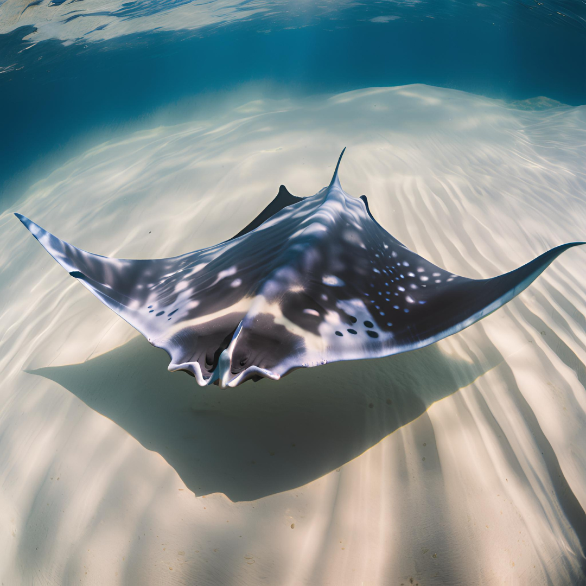
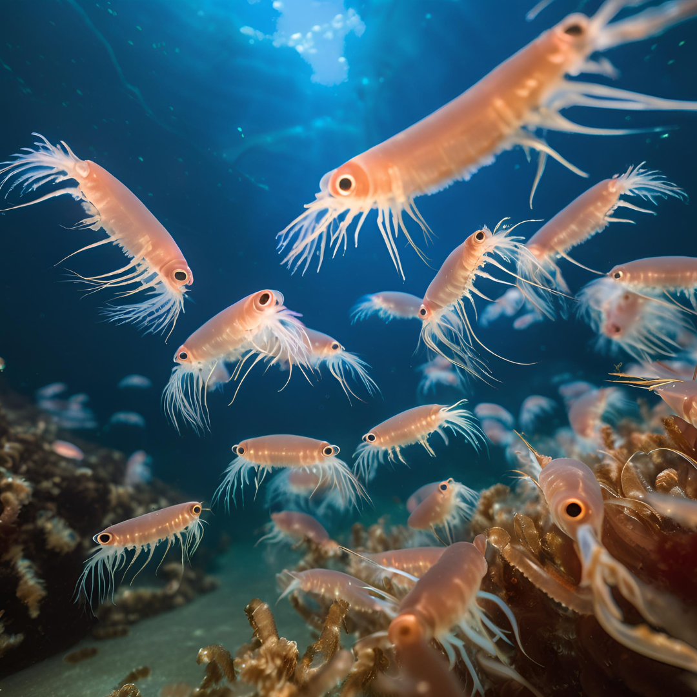
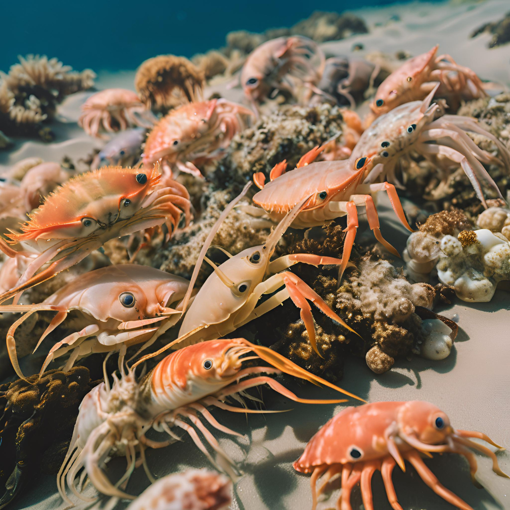

ZONA BATIPELÁGICA
INFORMACION
La zona batipelágica del océano se extiende desde los 1,000 metros hasta los 4,000 metros de profundidad, siendo una de las zonas más profundas del océano. En esta región, las condiciones son extremas: la oscuridad total, temperaturas cercanas al punto de congelación (alrededor de 4°C), y presiones muy altas.

×


×


×

!Toca la Gaviota para volver a inicio¡
ESPECIES MARINAS:
1. Peces Bioluminiscentes
- Ceratias holboelli:
Este pequeño tiburón, conocido por su bioluminiscencia, utiliza luz para atraer presas en la oscuridad
- Bolinopsis infundibulum:
Una medusa bioluminiscente que se encuentra en las aguas profundas, utilizando su luz para atraer y capturar presas.
2. Calamares
- Calamares del género Psychroteuthis y Grimalditeuthis (calamares de aguas profundas):
Son conocidos por sus habilidades bioluminiscentes. Estos calamares son importantes depredadores en la zona batipelágica.
- Calamares vampiros:
Estos calamares son famosos por su aspecto inusual y su capacidad para generar luz en la oscuridad.
3. Medusas y Cnidarios
- Medusas del orden Siphonophorae y Scyphozoa:
Muchas especies de medusas habitan la zona batipelágica. Algunas, como las especies de Siphonophorae, tienen estructuras luminosas y son capaces de atrapar presas usando sus tentáculos bioluminiscentes.
4. Peces Abisales
- Peces del género Macrouridae (pescado de fondo):
Son peces adaptados a la vida en la oscuridad, con cuerpos alargados y huesos fuertes que resisten la presión.
- Peces abisales de la familia Stomiidae (peces dragón):
Estos peces tienen dientes muy afilados y son conocidos por su bioluminiscencia. Son cazadores activos que dependen de la luz para atraer presas.
5. Crustáceos
- Krill abisal (diversas especies de Euphausidae):
Aunque más comunes en la zona mesopelágica, algunas especies de krill también habitan las zonas profundas y sirven como alimento para muchos depredadores.
- Camarones y otros crustáceos:
Crustáceos adaptados a las altas presiones y la oscuridad, alimentándose de materia orgánica que cae desde capas superiores.
6. Especies de Tiburones y Rayas
- Tiburón Somniosus (tiburón de Groenlandia):
A veces se encuentra en las aguas más profundas, incluyendo la zona batipelágica, cazando calamares y peces pequeños.
- Rayas y rayas abisales:
Algunas especies de rayas, adaptadas a las altas presiones y la oscuridad, habitan en esta zona.
7. Otros invertebrados y organismos microscópicos
- Organismos planctónicos:
En esta zona también habitan algunos tipos de zooplancton que sirven de alimento para los depredadores más grandes.
- Bivalvos y otros moluscos:
Algunos moluscos como mejillones y almejas se encuentran en estas profundidades.